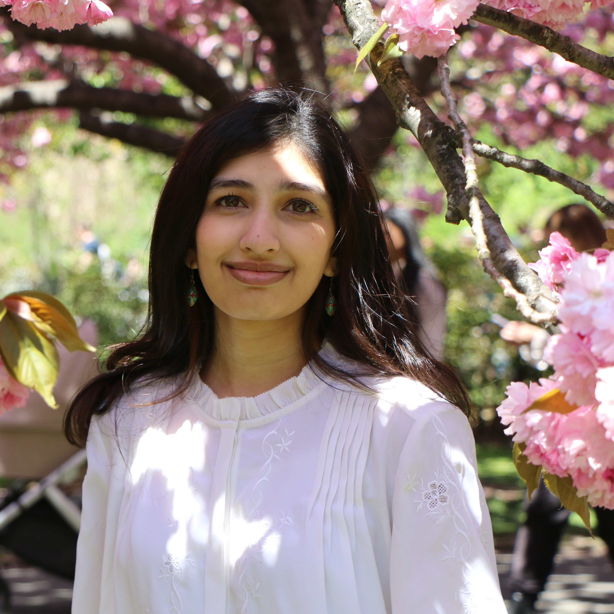

About Me

As a computational biologist, I get the best of both worlds! I work with data/code while simultaneously learning about biology. I love collaborating with scientists across many different diseases and disciplines to help them develop hypotheses and interpret results from their experiments.
I am currently a Bioinformatician II at the Harvard Chan Bioinformatics Core (HBC), where I analyze multi-omics data for Harvard labs and develop training materials to educate researchers on data analysis. My work primarily spans single-cell technologies and spatial transcriptomics, where I quantify and interpret cellular heterogeneity according to biological context.
Previously, I was a Computational Biologist at the Single-cell Analysis Innovation Lab (SAIL) led by Dr. Dana Pe'er at Memorial Sloan Kettering Cancer Center. There, I benchmarked, analyzed, and automated the workflows for different single-cell technologies in the context of cancer.
I am skilled in Python and R, experienced with HPC environments and cloud computing. My main passions are creating clear visualizations to communicate complex results from high-dimensional data.